Validations expérimentales du procédé
En parallèle de l'approche théorique reposant sur une modélisation numérique des phénomènes d'évapo-condensation, une unité pré-industrielle a été conçue et réalisée.
Cette unité pré-industrielle a trois principaux objectifs :
- Alimenter en données le modèle numérique afin de le calibrer et de vérifier l'écart entre modèle et réalité expérimentale.
- Mesurer les températures extérieures du réacteur et les comparer avec les températures internes du fluide afin de modéliser les déformations potentielles du réacteur.
- Valider le nouveau principe d'une configuration DLD (Digestion–Lyse–Digestion) et s'assurer que tous les paramètres de l'hydrolyse et de la digestion sont convenables.
3.1 Présentation de l'unité pré-industrielle
L'unité pré-industrielle est conçue de manière à être totalement autonome de la station d'épuration sur laquelle elle se trouve. Les seules interactions entre l'unité et l'usine sont les échanges de fluides et gaz :
- Alimentation en boues primaires et biologiques (séparément, avec proportion constante),
- Réinjection du biogaz produit dans le gazomètre de l'usine après analyse en ligne,
- Utilisation d'eau potable pour le générateur vapeur,
- Eau industrielle pour la dilution de la boue hydrolysée avant injection dans le digesteur.
L'unité est dimensionnée pour traiter une quantité de boue équivalente à une station de traitement d'eau de 15 000 habitants équivalents.

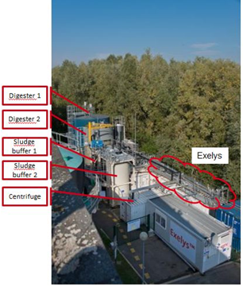
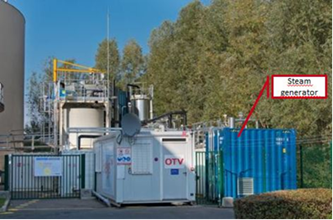
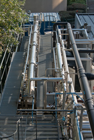
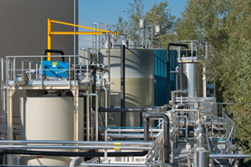
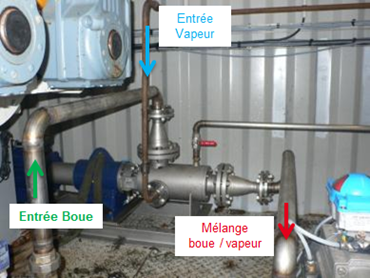
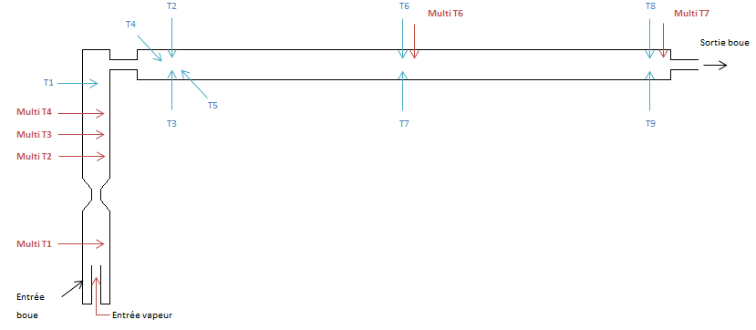

3.2 Validation du système d'injection de vapeur
3.2.1 Système d'injection initial — Canne statique
Le système d'injection initial est une canne plongeant dans la colonne verticale, munie de trous de 3 mm de diamètre répartis sur le pourtour. La vitesse de vapeur en sortie de trou est limitée à 20 m/s (recommandation industrielle) afin d'éviter vibrations et abrasion.
Les modélisations numériques montrent qu'avec ce type d'injecteur, des poches de vapeur ne se condensent pas totalement dans la colonne. Les mesures expérimentales de température confirment ce phénomène :
- Gradient de température entre haut et bas de colonne observé,
- Présence de vapeur non condensée détectée par les mesures de température en tête de colonne.

3.2.2 Alternatives d'injection étudiées
Deux alternatives aux injecteurs statiques ont été étudiées :
- Combiné injecteur vapeur + mélangeur statique : présente deux points bloquants — la siccité élevée des boues qui rend difficile l'injection de vapeur, et les faibles vitesses d'écoulement qui ne permettent pas un écoulement turbulent suffisant.
- Mélangeur dynamique : un équipement permettant, au sein d'un même dispositif, d'injecter la vapeur et de la mélanger avec la boue grâce à un rotor tournant à 900–1 500 tr/min.

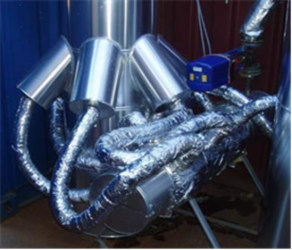
3.2.3 Validation du mélangeur dynamique
L'utilisation d'un mélangeur dynamique comme système d'injection vapeur a été testée et validée. Ce mélangeur dynamique est composé d'une chambre recevant les deux fluides (vapeur et boue) au sein de laquelle un rotor assure un parfait mélange en fonction de leurs caractéristiques respectives.
Les avantages du mélangeur dynamique par rapport aux injecteurs statiques :
- Ne dépend pas de la siccité des boues entrantes (point limitant des technologies statiques),
- Assure la condensation de la vapeur dès l'injection,
- Limite les gradients thermiques au sein du réacteur, réduisant les contraintes mécaniques,
- Design facilement extrapolable à une taille de réacteur industrielle.


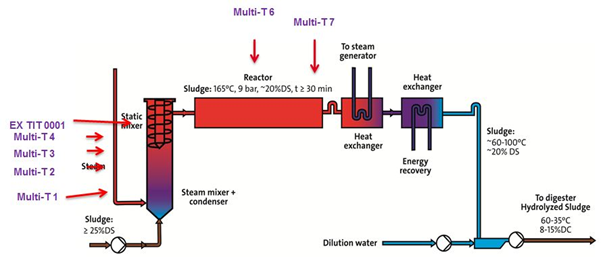
3.3 Performances de l'hydrolyse — Configuration DLD
3.3.1 Principes de la configuration DLD


La configuration DLD (Digestion–Lyse–Digestion) consiste à placer l'unité d'hydrolyse thermique entre deux digesteurs. La boue issue d'un premier digesteur est hydrolysée thermiquement, puis injectée dans un second digesteur. Cette configuration permet de :
- Améliorer la biodégradabilité de la matière organique restante après première digestion,
- Augmenter la production de biogaz de façon plus significative qu'une configuration classique Lyse–Digestion (LD),
- Améliorer la déshydratabilité des boues finales (siccité supérieure à 20 %).
3.3.2 Résultats de performance
| Indicateur | Configuration LD classique | Configuration DLD |
|---|---|---|
| Rendement d'abattement des matières volatiles (MV) | ~58 % | 68 % |
| Solubilisation de la DCO particulaire | — | 28 % |
| Augmentation de la production de biogaz | référence | +25–26 % |
| Siccité après déshydratation | ~18 % | 23–28 % |
Les performances de l'hydrolyse thermique continue ont été stables sur la période d'exploitation de référence, ce qui confirme la robustesse du procédé continu en configuration DLD.
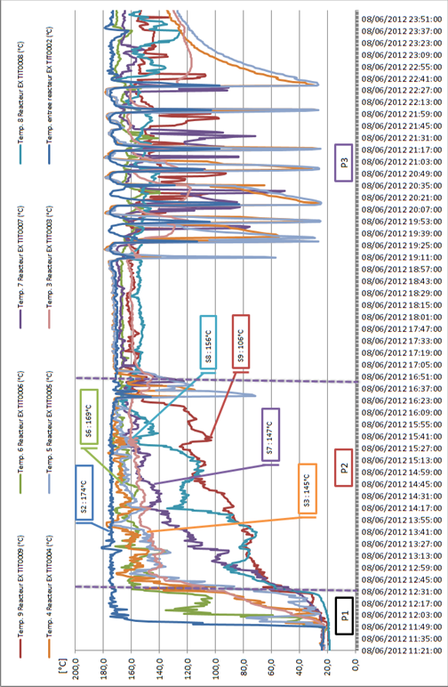

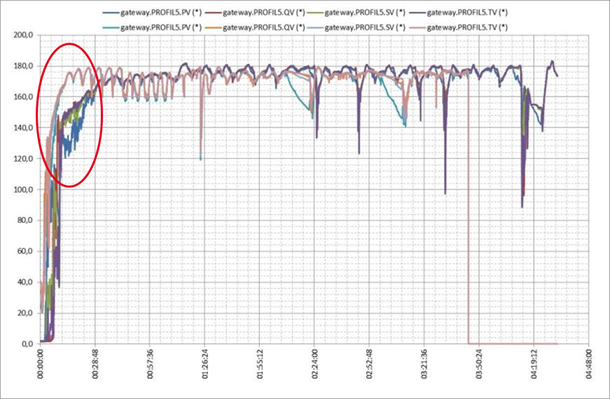
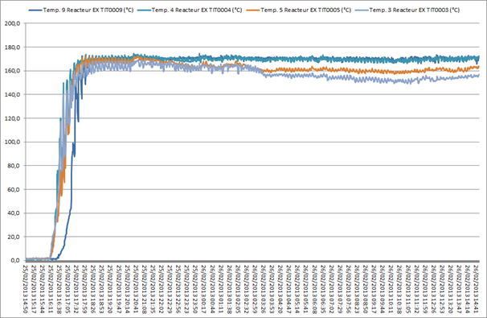


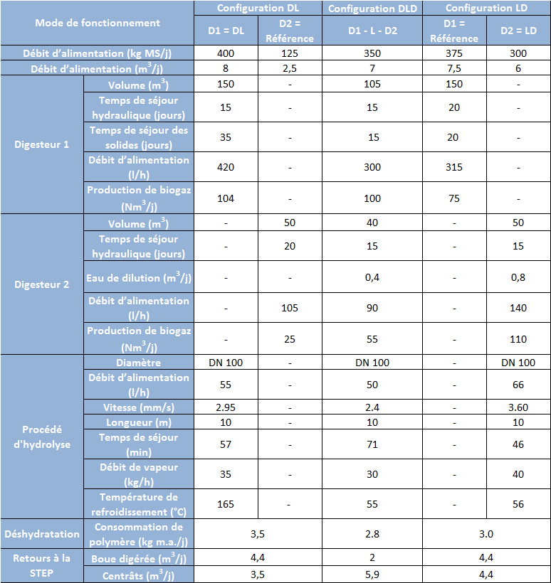
Conclusion du chapitre 3
Le suivi des températures a démontré que l'utilisation d'une canne d'injection statique ne permet pas d'assurer la bonne condensation de la vapeur dans la boue. En remplacement, l'utilisation d'un mélangeur dynamique a donné entière satisfaction.
Le suivi des performances de l'installation pilote a permis de valider l'intérêt de la configuration DLD en termes d'abattement de la matière organique (+10 points par rapport au LD) et de production de biogaz (+25 %), ainsi que la stabilité à long terme de l'hydrolyse continue.
La solubilisation de 28 % de la DCO particulaire et l'augmentation de 26 % de la production de biogaz confirment la performance du procédé.